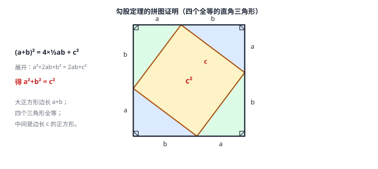

直角三角形与勾股定理
直角三角形两锐角互余，三边满足 a²+b²=c²（c 为斜边）——勾股定理是「面积账」：两个小正方形的面积合起来恰好等于大正方形。逆定理由边判定直角。勾股数（3,4,5 一族）是心算快检的工具。
| 所属主题 | 三角形 |
|---|---|
| 所属模块 | 几何 |
| 课标学段 | 第四学段（7~9 年级） |
| 前置知识 | 三角形的基本性质、等腰三角形与等边三角形、二次根式 |
| 核心素养 | 推理能力运算能力几何直观 |
教材定位
人民教育出版社《人教版（2024版）义务教育教科书·数学》
八年级下册第20章 勾股定理20.1 勾股定理及其应用20.2 勾股定理的逆定理及其应用
对应八下 20.1 与 20.2：勾股定理及其应用（含 30^\circ 角直角三角形的性质）在 20.1，逆定理及其应用在 20.2。
说明
直角三角形有一个角是 90°，两个锐角互余（内角和的直接推论）。记两直角边为 a、b，斜边（对着直角的最长边）为 c，则 a²+b²=c²——勾股定理。它把「直角」这个角度条件翻译成三边的等量关系：只要三角形是直角三角形，三边就被这条等式锁死。
逆定理把方向反过来：若三角形三边满足 a²+b²=c²（c 取最长边），则这个三角形是直角三角形，直角对着 c。定理用于「由直角算边」，逆定理用于「由边验角」。常用勾股数：3,4,5；5,12,13；8,15,17；7,24,25——以及它们的同倍数（6,8,10 是 3,4,5 的 2 倍）。含 30° 角的直角三角形里，30° 角所对的直角边等于斜边的一半。
使用场景
斜靠与拉直类问题：梯子靠墙（梯长、离墙距、触墙高三者知二求一）、固定旗杆的拉绳、电线杆的斜拉线——直角现成，勾股即用。
折行路程与对角线：先向东再向北的航行、矩形的对角线、长方体面上的蚂蚁爬行最短路径，都是「两段直角边求斜边」。木工放线用 3-4-5 检验直角，是逆定理的工地版。
注意点
用定理先辨角色：已知两边求第三边，先问这两边是「两条直角边」还是「一斜一直角边」——类型不同，算式不同（加法开方或减法开方）。c 永远对着直角、永远最长。
答案是二次根式要化到最简：√8 写成 2√2，√28 写成 2√7（二次根式 的化简规则在这里天天用）。开方取正值，并检查单位是否一致（米与厘米先统一）。
证明

图 1：勾股定理的拼图证明。四个全等直角三角形拼进边长 a+b 的正方形，中间围出边长 c 的正方形；两种数面积得 (a+b)²=4×½ab+c²，展开即 a²+b²=c²
证明
结论 1四个全等的直角三角形可以拼成一个边长为 (a+b) 的大正方形，中间围出一个四边形。
构图：四个全等的直角三角形（直角边 a、b，斜边 c）拼进一个边长为 (a+b) 的大正方形——每条边恰好摆一段 a 和一段 b，四个三角形在四角围出中间一个四边形。（见图 1）
关键一步依据是线段的和：每条边上摆一段 a 再摆一段 b，长度相加就是 a+b，四条边一样长才围得出正方形。这个拼法把「三条边之间的关系」变成「两块面积之间的关系」，是面积法的入口。
结论 2中间那个四边形其实是一个边长为 c 的正方形。
中间这个四边形每条边都是三角形的斜边 c，所以四条边相等。它的每个内角由原三角形的两个锐角与一个直角围成：四边形的角 = 180°−90°−锐角 = 另一个锐角（三角形的两个锐角互余），因此每个内角都是 90°。四条边相等且四角皆为直角的四边形是正方形，所以中间是一个边长为 c 的正方形。
关键一步依据是「四边相等且四角为直角的四边形是正方形」：四条边都是同一个斜边 c，所以相等；每个内角由原三角形的两个锐角与一个直角围成，而直角三角形的两个锐角互余，凑成的内角正好是 90°。两个条件同时成立，才能断定它是正方形而不只是四边形。
结论 3大正方形的面积等于四个三角形面积加上中间正方形面积：(a+b)² = 4×(ab/2) + c²。
面积两种数法：大正方形的面积 = 四个三角形 + 中间正方形，即 (a+b)² = 4×(ab/2) + c²。
关键一步依据是面积的可加性与分割：四个三角形与中间正方形不重不漏地铺满大正方形，所以两块面积可以相加；直角三角形面积是两条直角边乘积的一半，中间正方形的面积是 c²。两种数法描述的是同一块图形，这是「拼图证等式」的关键一步。
结论 4展开并整理即得 a²+b²=c²。
上一步等式的左边用完全平方公式展开（整式的运算）：a²+2ab+b² = 2ab+c²，两边减去 2ab，得 a²+b²=c²。全程只用面积拼补和代数展开，对任何直角三角形都成立。
关键一步依据是 (a+b)² 的完全平方公式展开（整式的运算）以及等式两边同减 2ab 的等式性质：4×(ab/2) 先并成 2ab，两边同时减去 2ab 就把含 ab 的项消掉，剩下的正是 a²+b²=c²。全程只有面积拼补和代数展开，没有任何测量，所以对任何直角三角形都成立。
结论 5勾股定理的逆定理成立：a²+b²=c² 的三角形是直角三角形。
逆定理的证明：设某三角形三边满足 a²+b²=c²。另作一个两直角边为 a、b 的直角三角形，由勾股定理其斜边为 √(a²+b²)=c；它与原三角形三边对应相等，全等（SSS），对应角相等——原三角形夹 c 的角也是直角。
关键一步依据是「作一个已知形状再比」的思路：另作的直角三角形由勾股定理算出斜边 √(a²+b²)=c，与原三角形三边对应相等，SSS 判定两三角形全等，全等的对应角相等，于是原三角形夹 c 的角也等于那个直角。这里用的是勾股定理本身，属定理与逆定理互证。
动手实验
在方格纸上画两直角边为 3、4 的直角三角形，以三边为边向外作三个正方形：数格子，两个小正方形分别是 9 格和 16 格；斜边上的正方形用割补法数出 25 格。9+16=25——两个小正方形的面积恰好合成大正方形，勾股定理在方格纸上「看得见」。
解题思路
用定理四步：①画图找直角（题目没画的，梯子靠墙、拐角、垂直条件都会给出直角）；②标三边，辨明谁是斜边；③列式：两直角边时 c=√(a²+b²)，已知斜边与一直角边时 b=√(c²−a²)；④开方化简，代回验算（量级是否合理）。
验直角：把最长边当 c，检验 a²+b² 是否等于 c²——等于则直角对着最长边。勾股数快检：看到 3,4 / 5,12 / 8,15 / 7,24 及其倍数，直接认出直角三角形。含 30° 的直角三角形：30° 角对直角边=斜边一半；等腰直角三角形三边比 1:1:√2，含 30° 的三边比 1:√3:2。
按场景的例题
例 1（场景：测量与工程） 梯子靠墙
梯子 AC 长 2.5 米，斜靠在垂直于地面的墙上，梯脚 C 距墙根 B 为 0.7 米。梯顶 A 离地面多高？
解：墙垂直于地面，直角在 B。AB=√(AC²−BC²)=√(2.5²−0.7²)=√(6.25−0.49)=√5.76=2.4（米）。验算：0.7²+2.4²=0.49+5.76=6.25=2.5² ✓。
答：梯顶离地 2.4 米。
例 2（场景：行程与速度） 快艇折航线
快艇从码头出发向东航行 16 海里，再折向北航行 12 海里到达浮标。码头到浮标的直线距离是多少？
解：向东与向北的方向互相垂直，折航线是两条直角边：距离=√(16²+12²)=√(256+144)=√400=20（海里）。12、16、20 是勾股数 3、4、5 的 4 倍，直角三角形心算可验。
答：20 海里。
例 3（场景：图形设计） 装饰架下料前的检验
要做一个直角三角形装饰架，三边计划下料 5、12、13（单位：分米）。按这个尺寸做出来，最长的边所对的角真是直角吗？
解：检验最长边 13：5²+12²=25+144=169=13²。由勾股逆定理，13 所对的角是直角——下料方案成立，不需要再量角度。
答：是；5²+12²=13²，由逆定理得直角。
常用推论
含 30° 角的直角三角形：30° 所对的直角边等于斜边的一半（等边三角形沿三线合一的线剪开即得：半底边对着 30° 角，恰是斜边一半）。
等腰直角三角形三边比 1:1:√2；含 30° 的直角三角形三边比 1:√3:2——两组比值在计算与作图中反复出现。
勾股数同倍放大仍是勾股数：(3k)²+(4k)²=(5k)²，对任意正数 k 成立。
易错点
错直角边为 3 和 4，斜边算成 3+4=7。
为什么错勾股是平方关系不是求和：斜边=√(3²+4²)=√25=5。加法把「面积相加」错记成了「长度相加」。
正确c=√(a²+b²)；先平方、再相加、后开方。
错已知两边 6 和 8，第三边答 10。
为什么错没分类：若 6、8 都是直角边，第三边（斜边）=10；若 8 已是斜边，第三边（直角边）=√(64−36)=√28=2√7。
正确分两种情况：都是直角边时为 10；8 是斜边时为 2√7。
错三边满足 a²+b²=c²，说「由勾股定理，这是直角三角形」。
为什么错定理说的是「直角三角形 → 三边关系」；由边关系反推直角用的是逆定理。引用方向写反，依据就错了。
正确由边判定直角时写「勾股定理的逆定理」。
直观理解
勾股是一笔面积账：以三边为边作三个正方形，两个小的拼起来恰好等于大的——定理本身就是一张拼图证明。直角三角形像被锁死的三明治：两条直角边一定，斜边就被 a²+b² 锁死，没有第二种可能——所以梯子位置一摆，顶端高度就定了；这也是为什么木工用一根 3-4-5 的绳圈就能放出直角。